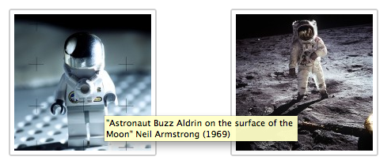
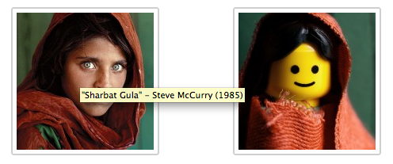
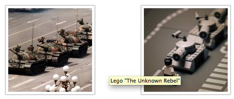

Wed, 23 Feb 2011 10:25:08 · Lego · Photographs · China · SteveMcCurry
irresistibly cute collections of classic



Irresistibly cute collections of classic photographs reinterpreted in Lego. See full sets here - Via Retronout.